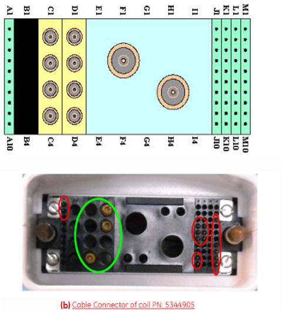
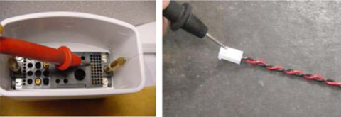

- 00000018WIA307EFD20GYZ
- id_131070733.3
- Oct 20, 2022 1:01:09 PM
1.5T HD 3-Channel Shoulder Coil Troubleshooting
Personnel Requirements
| Required Persons | Procedure |
| 1 | 30 min. |
Overview
The following tips can be used to troubleshoot common problems with the 1.5T HD 3-Channel Shoulder Array Coil by General Electric.
Preliminary Requirements
Tools and Test Equipment
The following tools and test equipment are required to troubleshoot:
-
Digital Volt Meter (DVM)
-
Phantom, P/N 46-265826G6
-
Phantom Positioner, P/N 2375136-3
Replacement Parts
Some tests may require FRUs for diagnosis.
Required Conditions
The following coil configuration name must be installed to run the MCQA tool: HDx Shoulder.
Procedure
Receiving No Signal
Problem:
Unable to pre-scan or scanning and not receiving a signal.
Possible Solution:
-
Verify the green LED above Port A is illuminated.
NoteThis coil is only compatible with Port A. The green LED indicates the coil is properly plugged into the system.
-
Verify the system has correctly detected the coil by selecting Currently Connected on the Coil Selection screen (example shown below) to display the coil(s) prescribed.

-
Verify the landmark is correct. Refer to Shoulder Coil Setup for Coil MCQA for landmarking instructions.
-
Verify that the scan locations and any Field of View (FOV) offsets are correct.
-
Perform a Continuity Check on the output cable (Check for Continuity of DC Lines in External Cable). The continuity check must be performed by a GE authorized Service Engineer.
-
Verify the coil is positioned with the cable exiting toward the bore.
-
Verify the cable is not looped or crossed.
If still not obtaining a signal, try to scan (transmit and receive) with the body coil. For this test, be sure to remove the imaging coil from the magnet bore before scanning with the body coil. If still receiving no signal, the problem is likely with the MR system.
If the scan completes successfully, there could be a problem with the 1.5T 3-Channel Shoulder Coil. Contact GE for further assistance. If unable to scan with the substitute coil, there may be a system problem related to this particular coil type.
Image Quality
Problem:
Poor image quality, shaded images, or MCQA fails.
Possible Solution:
-
Perform a Continuity Check on the output cable (Check for Continuity of DC Lines in External Cable). The continuity check must be performed by a GE authorized Service Engineer.
-
Verify there are no loops in the cables.
-
Verify there are no metal or ferromagnetic objects close to the coil, patient or magnet (such as a safety pin, hair pin).
-
Verify the coil is properly positioned.
-
Verify the center frequency is within the frequency adjustment range for the system.
-
Verify the R1, R2 and TG values from the pre-scan are within normally expected ranges.
If not already done, perform the coil MCQA Test. If the values obtained do not fall within normal operating parameters, investigate further by performing a phantom scan with the body coil. For this test, remove the imaging coil from the magnet bore before scanning with the body coil. If still experiencing the same problem, this is probably an MR system issue.
If the body coil scan is satisfactory, acquire a scan using another coil of the exact same type (receive-only, phased array) and the same system coil selection. If the image quality is visibly improved, there may be a problem with the 3-Channel Shoulder Coil. Contact GE for further assistance. If the image quality still suffers, there may be a system problem related to imaging with this type of coil.
Artifacts
Problem:
There is a black line or signal void on the image.
Possible Solution:
Verify there is no metal present in the area being scanned or on the patient.
Output Cable Check
Visual Check
Before removing the cable assembly from the coil, visually inspect all coaxial connectors and pins on the coil Cable Connector.
If there are any broken, deformed or recessed pins or coaxial connectors, perform Cable Replacement.
Pin Layouts of Hypertronics Connector shows the pin layouts of the coil Cable Connectors. Shoulder Coil (P/N 5344905) has two pins (A1 and A2) in column A, five pins (J4, J5, J6, J9 and J10) in column J, three pins (K4, K5, and K6) in column K, five pins (M3, M7, M8, M9 and M10) in column M, and three RF coaxial connectors in C4, D1 and D2.
| Notice | |
|---|---|

Check for Continuity of DC Lines in External Cable
-
Remove the cable assembly from the coil as described in Cable Replacement.
-
There are three pins in column J (J4, J5, J6 shown in Pin Layouts of Hypertronics Connector) connecting to DC wires of the cable. Pins and Connected DC & RF Wires for Coil P/N 5344905 shows these pins and corresponding DC wires.
Use a DVM to check the resistance between the pin in column J and the corresponding DC wire ( Measure DC Line Resistance). For resistance values of Shoulder Coil 5344905, refer to Pins and Connected DC & RF Wires for Coil P/N 5344905. If any resistance reading is not within this range, perform Cable Replacement.
| Pins in Column (System Connector Side) | J4 | J5 | J6 | K4 | K5 | K6 | M3 | ||
| DC Wire Color | Red | Brown | Blue | Black | White | Yellow | Clear | Black | Gray |
| Coil Side of Cable | Ch 1 | Ch 2 | Ch 3 | Ch 1 | Ch 2 | Ch 3 | Ch 1 Center Pin | Ch 2 Center Pin | Ch 3 Center Pin |
| Specification in Ohms | 6.2 +1.0 | 1.2 +0.5 | 6.2 +1.0 | ||||||
